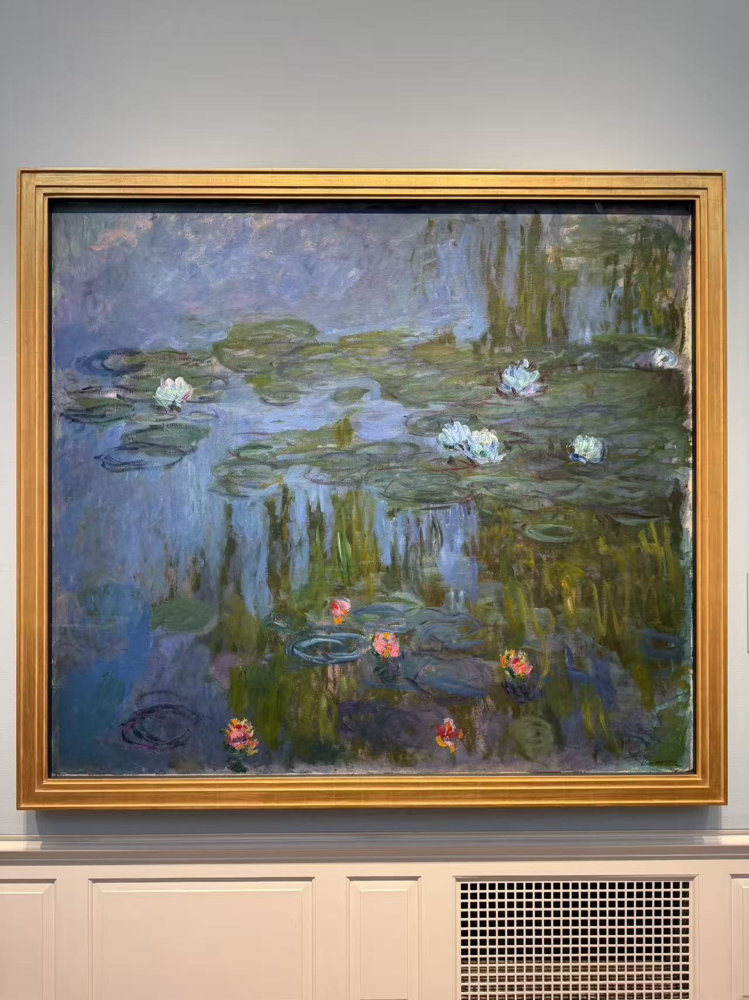
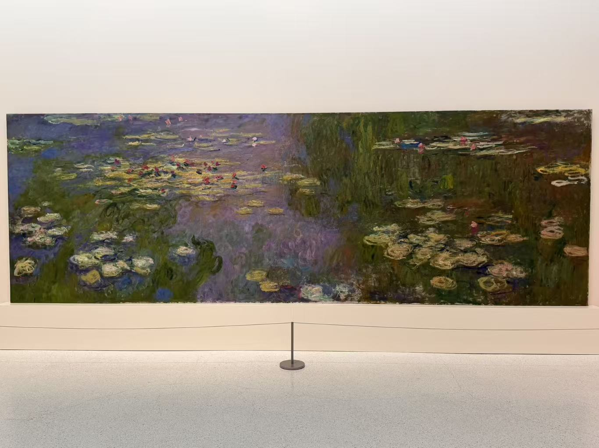
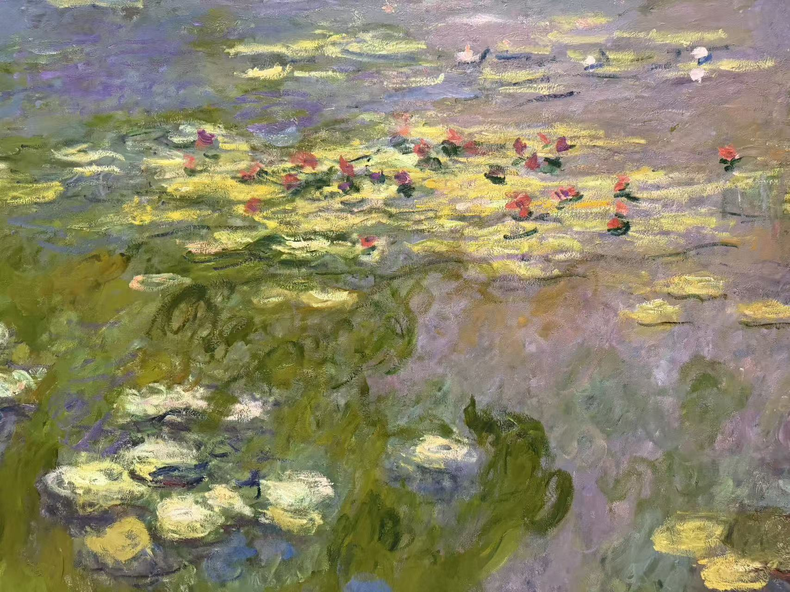
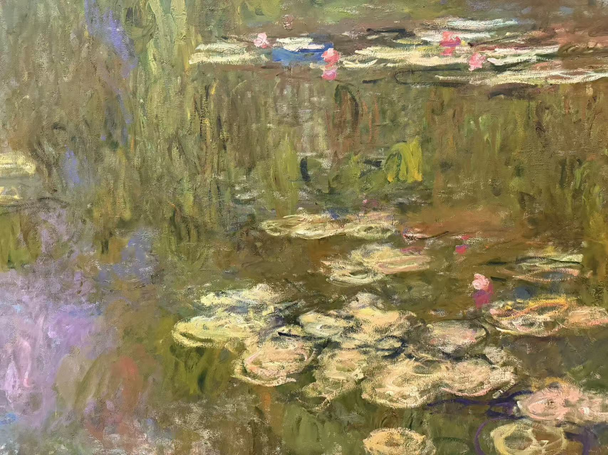

CLAUDE MONET / 展开的大画幅
睡莲（卡内基）
Water Lilies (Nymphéas)

- 作者
- 克洛德·莫奈
- 年代
- 约1915—1926年
- 材料
- 布面油画
- 收藏／所在
- 卡内基艺术博物馆 · 匹兹堡
- 编号／位置
- 62.19.1
看画
远看是一整条池水；走近以后，花、叶与倒影分解成有厚薄和方向的色块。
作品札记与资料
卡内基馆方形容画幅高约六英尺、宽近二十英尺，也就是宽约六米；缩成网页上的一张小图，很容易失去它在展厅里展开的尺度。
左侧细节里，紫色水光与黄绿色叶片相接，红色小花只是短短几笔；另一张细节则能看见竖向倒影怎样穿过浅色睡莲之间。先看局部，再回到全景，比较这些看似松散的笔触怎样重新合成水面。作品由 Alan M. Scaife 夫人的资助购藏，编号62.19.1。
基本信息据馆方资料与已有现场展签 · 2026年10月核对。
LOOK CLOSER
走近看笔触
点击照片放大，可以在大图中切换照片。

